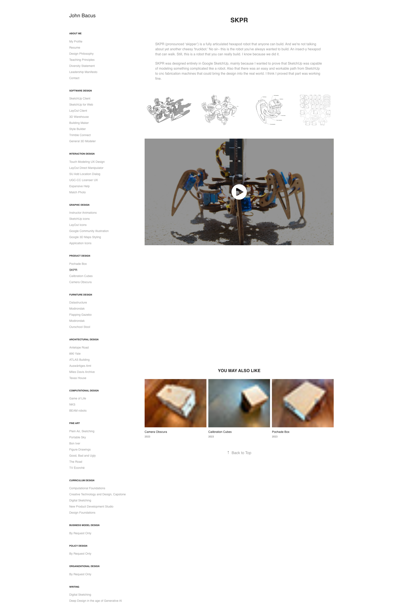

SKPR
SKPR (pronounced 'skipper') is a fully articulated hexapod robot that anyone can build. And we're not talking about yet another cheesy 'truckbot.' No sir– this is the robot you've always wanted to build. An insect-y hexapod that can walk. Still, this is a robot that you can really build. I know because we did it.
SKPR was designed entirely in Google SketchUp, mainly because I wanted to prove that SketchUp was capable of modeling something complicated like a robot. Also that there was an easy and workable path from SketchUp to cnc fabrication machines that could bring the design into the real world. I think I proved that part was working fine.